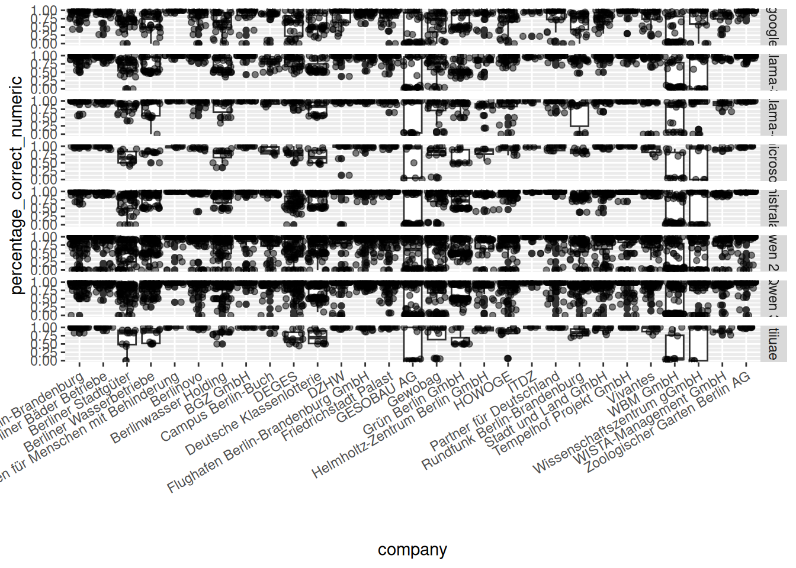
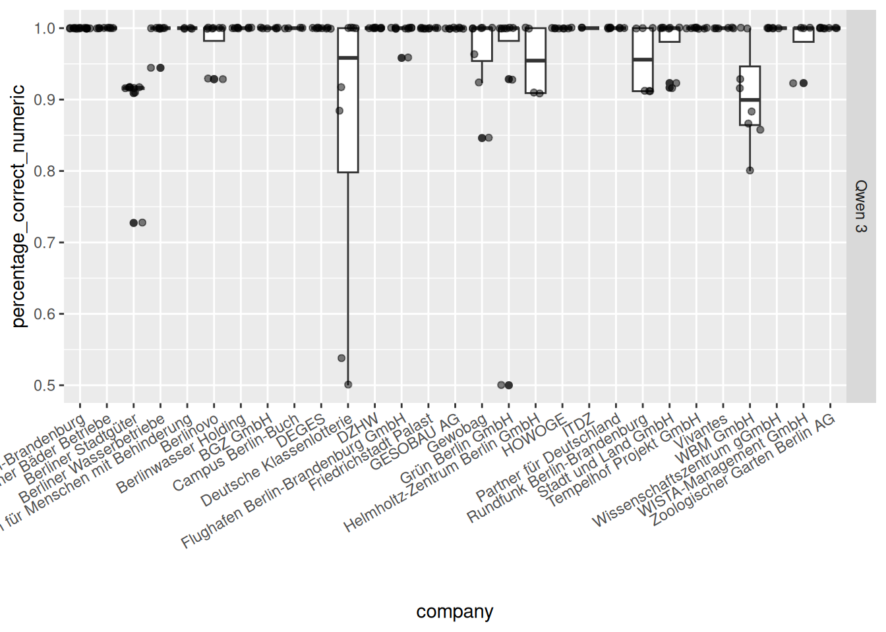

9 Appendix B - Information extraction report
(ref:information-extraction-intro-text)
9.1 Baseline: Regex
The baseline for the table extraction task is set by an approach using regular expressions on the text extract. Figure 9.1 shows the performance of this approach. In the first row (A) the percentage of correct predicted numeric values and the percentage of total correct responses is shown. The second row (B) shows the precision, recall and F1 score for identifying a value as missing and thus predicting null. The percentage of total correct responses is calculated as
\[ percentage\_correct\_total = \frac{n_{correct\_numeric} + n_{missing\_true\_positive}}{n_{total\_entries}} \]
with \(n_{total\_entries} = 58\) . This implies that the correct prediction of missing values has more influence for tables, that have only a few numeric values in the ground truth. The minimal number of numeric values in a tables is ten. Figure 14.1 shows, that the percentage of total correct responses is not a sufficient metric, because responses that only predicted null can have a high score if there are only a few numeric values in the ground truth table.
9.1.0.0.1 Performance
In each frame there are two groups of two box-plots. The left group is showing the performance on real Aktiva tables. The right group shows the performance on synthetic Aktiva tables. Within the group the green (left) box shows the performance on text extracted with the pdfium library. The peach colored (right) box shows the performance on text extracted with the pymupdf library.
Figure 9.1 shows, that the regex approach performs better26 on the synthetic tables compared to the real tables. Even though, the performance is not perfect and more consistent on the text extracted with pymupdf compared to pdfium. In contrast, the used text extraction library has no noticeable influence on the real Aktiva tables.
The performance for the regex based table extraction is much better than the regex based page identification performance. The median performance scores of the regex approaches will be reflected by a dashed line in the box-plots in subsequent sections. The scores for the real Aktiva table extraction are:
Code
| measure | real_mean | real_median | synthetic_mean | synthetic_median |
|---|---|---|---|---|
| percentage of correct predictions total | 0.686 | 0.707 | 0.969 | 0.966 |
| percentage of correct numeric predictions | 0.778 | 0.909 | 0.973 | 0.966 |
| F1 score | 0.789 | 0.800 | 0.979 | 1.000 |
Code
p1 <- df_table_extraction_regex %>%
select(c(table_type, percentage_correct_numeric, percentage_correct_total, T_EUR, extraction_backend)) %>%
pivot_longer(cols = -c(table_type, T_EUR, extraction_backend)) %>%
ggplot() +
# geom_point(
# data= . %>% filter(table_type == "real_tables", name == "percentage_correct_numeric"),
# aes(x = table_type, y = value, alpha = extraction_backend), color = "#264DEB",
# shape = 4, position=position_jitterdodge(dodge.width=0.9, jitter.width = 0.2, jitter.height = 0.005)
# ) +
geom_boxplot(aes(x = table_type, y = value, fill = extraction_backend), alpha = .3) +
# geom_jitter(data= . %>% filter(table_type == "real_tables"), aes(x = table_type, y = value, color = T_EUR), alpha = .8, height = 0, shape = 4) +
# facet_wrap(~name, ncol = 1) +
scale_alpha_manual(values = c(1, 1), guide = "none") +
scale_fill_manual(values = c("#94EB1F", "orange")) +
scale_x_discrete(guide = guide_axis(angle = 0)) +
facet_grid(~name) +
theme(
axis.title.x = element_blank()
)
p2 <- df_table_extraction_regex %>% select(c(table_type, NA_precision, NA_recall, NA_F1, T_EUR, extraction_backend)) %>%
pivot_longer(cols = -c(table_type, T_EUR, extraction_backend)) %>%
ggplot() +
geom_boxplot(aes(x = table_type, y = value, fill = extraction_backend), alpha = .3) +
scale_alpha_manual(values = c(1, 1)) +
scale_fill_manual(values = c("#94EB1F", "orange")) +
scale_x_discrete(guide = guide_axis(angle = 0)) +
facet_grid(~name)
design <- "ac \n bb"
p1 + p2 + guide_area() +
plot_layout(
design = design,
guides = "collect",
widths = c(2, 1)
) + plot_annotation(tag_levels = 'A')
Figure 9.1: Performance overall and on numeric value extraction with regular expressions.
9.2 Extraction with LLMs
Code
df_real_table_extraction <- readRDS("data_storage/real_table_extraction_extended_llm.rds") %>%
filter(!model %in% c("deepseek-ai_DeepSeek-R1-Distill-Qwen-32B", 'google_gemma-3n-E4B-it')) %>%
mutate(
model = gsub("^[^_]+_", "", model),
company = map_chr(filepath, ~str_split(str_split(., "/")[[1]][5], "__")[[1]][1])
) %>% filter(company != "MEAB GmbH")
df_real_table_extraction_synth <- readRDS("data_storage/real_table_extraction_extended_synth.rds") %>%
mutate(
model = gsub("^[^_]+_", "", model),
company = map_chr(filepath, ~str_split(str_split(., "/")[[1]][5], "__")[[1]][1])
) %>% filter(company != "MEAB GmbH")
df_real_table_extraction_azure <- readRDS("data_storage/real_table_extraction_extended_azure.rds") %>%
mutate(
model = gsub("^[^_]+_", "", model),
company = map_chr(filepath, ~str_split(str_split(., "/")[[1]][5], "__")[[1]][1])
) %>% filter(company != "MEAB GmbH")
model_by_size <- c(
'gemma-3-4b-it', #'gemma-3n-E4B-it',
"gemma-3-12b-it", "gemma-3-27b-it",
"gpt-oss-20b", "gpt-oss-120b",
"Llama-3.1-8B-Instruct", "Llama-3.1-70B-Instruct", "Llama-3.3-70B-Instruct",
"Llama-4-Scout-17B-16E-Instruct", "Llama-4-Maverick-17B-128E-Instruct-FP8",
"Ministral-8B-Instruct-2410", "Mistral-Small-3.1-24B-Instruct-2503",
"Mistral-Large-Instruct-2411", "Qwen2.5-0.5B-Instruct",
"Qwen2.5-1.5B-Instruct", "Qwen2.5-3B-Instruct", "Qwen2.5-7B-Instruct",
"Qwen2.5-14B-Instruct", "Qwen2.5-32B-Instruct", "Qwen2.5-72B-Instruct",
"Qwen3-0.6B", "Qwen3-1.7B", "Qwen3-4B",
"Qwen3-8B", "Qwen3-14B", "Qwen3-30B-A3B-Instruct-2507", "Qwen3-32B",
"Qwen3-235B-A22B-Instruct-2507-FP8", "Qwen3-235B-A22B-Instruct-2507",
# "gpt-4.1-nano", "gpt-4.1-mini", "gpt-4.1",
"Falcon3-10B-Instruct", "phi-4"
)
method_order <- c("top_n_rag_examples", "n_random_examples", "top_n_rag_examples_out_of_sample", "static_example", "zero_shot" )
norm_factors <- read_csv("../benchmark_jobs/page_identification/gpu_benchmark/runtime_factors_real_table_extraction.csv") %>%
mutate(
model_name = model_name %>% str_replace("/", "_")
)
norm_factors_few_examples <- norm_factors %>% filter((str_ends(filename, "binary.yaml") | str_ends(filename, "multi.yaml") | str_ends(filename, "vllm_batched.yaml")))
df_real_table_extraction <- df_real_table_extraction %>% left_join(
norm_factors_few_examples %>% mutate(model_name = gsub("^[^_]+_", "", model_name)) %>% select(model_name, parameter_count, normalization_factor),
by = c("model" = "model_name")
) %>% mutate(normalized_runtime = round(runtime*normalization_factor, 0))
df_overview <- bind_rows(df_real_table_extraction, df_real_table_extraction_azure) %>%
filter(out_of_company != TRUE | is.na(out_of_company), n_examples <= 5) %>%
filter(model %in% model_by_size) %>%
filter(n_examples != 2) %>%
mutate(
model = factor(model, levels = model_by_size),
method_family = factor(method_family, levels = method_order),
n_examples = fct_rev(ordered(paste("n =", n_examples)))
)
units_real_tables <- read_csv("../benchmark_truth/real_tables_extended/table_characteristics_more_examples.csv") %>% mutate(
filepath = paste0('/pvc/benchmark_truth/real_tables_extended/', company, '__', filename),
T_EUR = (T_in_year + T_in_previous_year)>0,
T_EUR_both = (T_in_year + T_in_previous_year)>1
) %>% select(filepath, T_EUR, T_EUR_both)
df_real_table_extraction_synth <- df_real_table_extraction_synth %>% left_join(units_real_tables)where to put?:
- GESOBAU AG and WBM GmbH bad, text selection with mouse odd
- shift median upwards for GESOBAU: Qwen3, mitral, microsoft, Llama
- shift median upwards for WBM: Llama 4
Code
df_real_table_extraction %>% filter(!str_detect(model, "oss")) %>%
filter(n_examples == 3) %>%
mutate(.before = 1, company = map_chr(filepath, ~str_split(str_split(., "/")[[1]][5], "__")[[1]][1])) %>%
group_by(company) %>%
ggplot() +
geom_boxplot(aes(x = company, y = percentage_correct_numeric)) +
geom_jitter(aes(x = company, y = percentage_correct_numeric), alpha= .5) +
scale_x_discrete(guide = guide_axis(angle = 30)) +
facet_grid(model_family ~ .)
Code
df_real_table_extraction %>% filter(str_detect(model, "235B")) %>%
filter(n_examples == 5, method_family == "top_n_rag_examples") %>%
mutate(.before = 1, company = map_chr(filepath, ~str_split(str_split(., "/")[[1]][5], "__")[[1]][1])) %>%
group_by(company) %>%
ggplot() +
geom_boxplot(aes(x = company, y = percentage_correct_numeric)) +
geom_jitter(aes(x = company, y = percentage_correct_numeric), alpha= .5) +
scale_x_discrete(guide = guide_axis(angle = 30)) +
facet_grid(model_family ~ .)
This section presents the results for the table extraction task performed with LLMs on Aktiva tables. Subsection 9.2.1 compraes the performance of open source models on real tables. It also compares those results with the table extraction performance achieved with models by OpenAI.
Subsection 9.2.2 presents the results on synthetic Aktiva tables. Subsection 9.2.3 shows a hybrid approach, where synthetic tables are used for the in-context learning, to extract real Aktiva tables. Finally, we summarize the results for all approaches in subsection 5.2.2.
- confidence usable to head for user checks?
- not handled new entries
- five examples bring not much more, but a little
Explain static_example method.
9.2.1 Real tables
Code
df_top_scoring_models_big <- df_real_table_extraction %>%
# filter(parameter_count>20) %>%
group_by(model, method) %>%
mutate(
median_total = median(percentage_correct_total, na.rm = TRUE),
mean_total = mean(percentage_correct_total, na.rm = TRUE)
) %>%
group_by(model_family) %>% slice_max(n = 1, mean_total, with_ties = FALSE) %>%
select(model_family, model, method_family, n_examples, parameter_count, mean_total, median_total, normalized_runtime) %>%
arrange(desc(mean_total))
top_scoring_model_big_mean <- df_top_scoring_models_big %>% ungroup() %>% slice_head(n = 1) %>% .$mean_total %>% round(2)
df_top_scoring_models_small <- df_real_table_extraction %>%
filter(parameter_count<17) %>%
group_by(model, method) %>%
mutate(
median_total = median(percentage_correct_total, na.rm = TRUE),
mean_total = mean(percentage_correct_total, na.rm = TRUE)
) %>%
group_by(model_family) %>% slice_max(n = 1, mean_total, with_ties = FALSE) %>%
select(model_family, model, method_family, n_examples, parameter_count, mean_total, median_total, normalized_runtime) %>%
arrange(desc(mean_total))
top_scoring_model_small_mean <- df_top_scoring_models_small %>% ungroup() %>% slice_head(n = 1) %>% .$mean_total %>% round(2)
zero_shot_stars <- df_real_table_extraction %>% filter(method == "zero_shot") %>% group_by(model) %>%
reframe(median_total = median(percentage_correct_total, na.rm = TRUE), median_num = median(percentage_correct_numeric, na.rm = TRUE), median_F1 = median(NA_F1, na.rm = TRUE)) %>% filter(median_total>real_table_extraction_regex_total_performance_median, median_num>real_table_extraction_regex_num_performance_median, median_F1>real_table_extraction_regex_NA_F1_median)
static_example_stars <- df_real_table_extraction %>% filter(method == "static_example") %>% group_by(model) %>%
reframe(median_total = median(percentage_correct_total, na.rm = TRUE), median_num = median(percentage_correct_numeric, na.rm = TRUE), median_F1 = median(NA_F1, na.rm = TRUE)) %>% filter(median_total>real_table_extraction_regex_total_performance_median, median_num>real_table_extraction_regex_num_performance_median, median_F1>real_table_extraction_regex_NA_F1_median)
underperformer <- df_real_table_extraction %>% filter(!method %in% c('zero_shot', 'static_example')) %>% group_by(model, method) %>%
reframe(median_total = median(percentage_correct_total, na.rm = TRUE), median_num = median(percentage_correct_numeric, na.rm = TRUE), median_F1 = median(NA_F1, na.rm = TRUE)) %>% group_by(model) %>% filter(any(median_total<real_table_extraction_regex_total_performance_median, median_num<real_table_extraction_regex_num_performance_median, median_F1<real_table_extraction_regex_NA_F1_median)) %>% arrange(median_total) %>% slice_head(n = 1)
super_underperformer <- df_real_table_extraction %>% filter(!method %in% c('zero_shot', 'static_example'), n_examples>1) %>% group_by(model, method, parameter_count) %>%
reframe(median_total = median(percentage_correct_total, na.rm = TRUE), median_num = median(percentage_correct_numeric, na.rm = TRUE), median_F1 = median(NA_F1, na.rm = TRUE)) %>% group_by(model) %>% filter(any(median_total<real_table_extraction_regex_total_performance_median, median_num<real_table_extraction_regex_num_performance_median, median_F1<real_table_extraction_regex_NA_F1_median)) %>% arrange(median_total) %>% slice_head(n = 1)9.2.1.0.1 Performance
For the table extraction task 32 open source models from 9 model families have been benchmarked27. Table 9.2 shows the best performing combination of LLM and prompting strategy for each model family. The results are sorted by their mean percentage of total correct predictions. It also shows the normalized runtime in seconds and the parameter number of the model.
Qwen3-235B-A22B-Instruct performed best with a mean score of 0.97. This is equal with the performance that we achieved building the ground truth dataset. There are other models that perform almost as good with a score of 0.96 and more, but that donât match the human performance. These models show a median score of 1.0. Qwen3-235B-A22B-Instruct is the second fastest of those well performing models and needs less than six minutes. Only Llama 4 Maverick is faster. It needs half the time to extract the information.
Code
df_top_scoring_models_big %>%
mutate(
median_total = round(median_total, 3),
mean_total = round(mean_total, 3)
) %>%
render_table(caption = "Comparing best table extraction performance with real 'Aktiva' dataset for each model family", ref = opts_current$get("label"), alignment = "lllrrrrr", dom="t")Table 9.3 shows the performance of models with less than 17B parameters, that have not been listed above. Qwen3-14B performs best among the smaller models achieving a mean of 0.93 and median of 1.0. It takes 1:49 minutes to extract the information from all Aktiva tables. Ministral-8B-Instruct does not perform as good as in the page identification task.
Code
df_top_scoring_models_small %>%
filter(!model %in% df_top_scoring_models_big$model) %>%
mutate(
median_total = round(median_total, 3),
mean_total = round(mean_total, 3)
) %>%
render_table(caption = "Comparing best table extraction performance with real 'Aktiva' dataset for each model family for models with less than 17B parameters. Models that have been listes in the previous table are not listed again.", ref = opts_current$get("label"), alignment = "lllrrrrr", dom="t")Most models need a context learning approach to beat the performance of the regular expression approach at total and numeric correctness rate and F1 score. Table 9.4 shows, that 3 models perform better without any guidance28. 6 models achieved an performance better than the regex baseline using the approach to learn with a fixed example from the synthetic dataset.
In contrast: most of the models achieved a better performance than the regex baseline when they were provided with one or more examples from real Aktiva tables. Table 9.5 shows, that 11 donât consitently achieve a better score, when provided with three or five real Aktiva table examples. Here we find the smallest models with less than 2B parameters which donât achieve a consistence performance no matter how many examples they get. But we also find models that start to perform bad if they get a too long context with too many examples like the very recent and large model Llama 4 Maverick.
The results for all models are presented in Figure 14.15, 14.16 and 14.17. In general the performance within a model family is positive correlated with the models number of parameters, if we provide real Aktiva examples. Once the 4B parameters are passed, the improvements get less and less, approaching the perfect performance. But no model achieves sperfect result on all documents. The zero_shot and static_example approach show some unpredicted performance drop, i.e. for Qwen3-14B.
Code
zero_shot_stars %>% full_join(static_example_stars, join_by(model), suffix = c("_zero_shot", "_static_example")) %>% select(model, starts_with("median_total")) %>%
mutate_if(
is.numeric,
~ifelse(
. == max(., na.rm = TRUE),
paste0("**", round(., 3), "**"),
round(., 3)
)
) %>%
render_table(
alignment = "lrr",
caption = "Comparing table extraction performance with real 'Aktiva' dataset for models that perform well without or with little context learning",
ref = opts_current$get("label"), dom="t")Code
super_underperformer %>% select(model, method, parameter_count, median_total) %>% ungroup() %>% # mutate(model = str_replace_all(model, "_", " ")) %>%
mutate_if(
is.numeric,
~ifelse(
. == max(., na.rm = TRUE),
paste0("**", round(., 3), "**"),
round(., 3)
)
) %>%
render_table(
alignment = "llrr",
caption = "Comparing table extraction performance with real 'Aktiva' dataset for models that perform worse than the regex baselin with 3 or 5 examples for in-context learning",
ref = opts_current$get("label"), dom="t")Code
model_by_size_gpt <- c(
"Qwen3-0.6B", "Qwen3-8B", "Qwen3-30B-A3B-Instruct-2507", "Qwen3-235B-A22B-Instruct-2507-FP8",
"gpt-4.1-nano", "gpt-5-nano", "gpt-4.1-mini", "gpt-5-mini",
"gpt-oss-20b", "gpt-oss-120b", "gpt-4.1"
)
df_overview_gpt <- bind_rows(df_real_table_extraction, df_real_table_extraction_azure) %>%
filter(out_of_company == TRUE | is.na(out_of_company), n_examples <= 5) %>%
filter(model %in% model_by_size_gpt) %>%
mutate(
model = factor(model, levels = model_by_size_gpt),
method_family = factor(method_family, levels = method_order),
n_examples = fct_rev(ordered(paste("n =", n_examples)))
) %>% mutate(
n_predicted_values = NA_true_positive+NA_false_positive+NA_false_negative+NA_true_negative
)
perc_wrong_prediction_count <- round((df_overview_gpt %>% filter(!str_detect(model, "Qwen"), n_predicted_values != 58) %>% nrow()/df_overview_gpt %>% filter(!str_detect(model, "Qwen")) %>% nrow()) * 100, 1)9.2.1.0.2 OpenAI models
Even though a lot of documents to process at RHvB will not be public and thus must not be processed on public cloud infrastructure, the performance of models like OpenAIâs GPT are interesting benchmark references within this thesis and for comparing these findings with other papers results. Therefore for this thesis the public available versions of annual reports have been used instead of the ones used internally or for public administration purposes. Those public available reports often are visually more appealing and more heterogeneous in their structure.
Table @ref(tab.table-extraction-llm-performance-total-gpt-ranking) shows the ranking for the best model-method combinations Qwen3 235B is performing best. gpt-4.1 and gpt-5-mini perform equally well and are almost as good as Qwen3 235B. All models but gpt-4.1-nano, gpt-5-nano and Qwen3-0.6B manage to beat the regex threshold. Qwen3-0.6B performs better than the nano models once it gets provided with an example.
Table 9.7 shows the accumulated costs for the table extraction task for the models provided by Azure. Using gpt-4.1 is most expensive, followed by gpt-5-mini. Next is gpt-5-nano. This is caused by an unexpected high cost for output tokens. In general we find, that the ratio of output costs to input costs is much higher for gpt-5 models. Since gpt-5-mini gives consistently good results already with one provided example, this could be the most cost efficient strategy. But it takes gpt-5-mini more than three times longer to respond than gpt-4.1.
Code
df_overview_gpt %>% group_by(model, method) %>%
reframe(
mean_percentage_correct_total = mean(percentage_correct_total, na.rm=TRUE),
median_percentage_correct_total = median(percentage_correct_total, na.rm=TRUE),
# median_runtime = median(runtime)
) %>% arrange(desc(mean_percentage_correct_total)) %>%
group_by(model) %>%
slice_max(n = 1, mean_percentage_correct_total, with_ties = FALSE) %>%
ungroup() %>%
arrange(desc(mean_percentage_correct_total)) %>%
mutate(
mean_percentage_correct_total = round(mean_percentage_correct_total, 2),
median_percentage_correct_total = round(median_percentage_correct_total, 2),
# median_runtime = round(median_runtime)
) %>% rename("median correct total" = median_percentage_correct_total) %>%
render_table(
alignment = "llrr",
caption = "Comparing table extraction performance with real 'Aktiva' dataset for OPenAIs GPT models with a selection of Qwen3 models.",
ref = opts_current$get("label"), dom="t"
)Code
costs_azure <- read_csv("../CostManagement_master-thesis_2025.csv")
costs_azure %>%
mutate(Model = map_chr(
Model, ~{paste(str_split(., " ")[[1]][1:3], collapse = " ")}
)) %>% mutate(
Model = str_replace_all(tolower(str_remove(Model, " Inp| Outp| cached")), " ", "-"),
Cost = round(Cost, 2)
) %>% group_by(Model, Meter) %>%
summarise(
Cost = sum(Cost)
) %>%
pivot_wider(names_from = Meter, values_from = Cost, names_prefix = "Cost_") %>%
mutate(
Cost_total = Cost_Input+Cost_Output,
) %>%
arrange(desc(Cost_total)) %>%
setNames(tolower(colnames(.))) %>%
left_join(
df_overview_gpt %>% group_by(model) %>%
summarize("median runtime in minutes" = paste0(round(median(runtime)/60), ":", round(median(runtime)%%60)))
) %>%
render_table(
alignment = "lrrrr",
caption = "Comparing the costs for OpenAIs GPT models provided by Azure. Notice the high output cost for GPT 5 Nano.",
ref = opts_current$get("label"), dom="t"
)Discussion?:
Since the output token costs are not that different (2 $ for 1M output tokens with gpt-5-mini vs 1.6 $ with gpt-4.1-mini), the generated output token number has to be much higher for the gpt-5-mini models. But since the responses are based on the same schema and required the same numeric values there shouldnât be a big difference29.
Figure 9.2 shows the distribution of F1 score for up to three examples. It shows green crosses at the bottom of the abscissa that indicate prediction, where no null value is reported. This means, the model hallucinates many numeric values. This is only the case for OpenAIâs models but not for Qwen3 models. This behaviour persists up to five examples for the nano as well the gpt-oss 20b model. For gpt-4.1 and gpt-4.1-mini these cases vanish when we provide three or more examples and never appeared for gpt-5-mini.
One can find the full plots in Figures 14.19, 14.20 and 14.21).
We were not able to get OpenAIâs models to stick to the provided json schema strictly. Passing the ebnf grammar did not work at all. This means that with gpt-4.1-nano there have been 88 predictions that have been completely empty. For gpt-5-nano we find 6 such predictions. Figure @red(fig:table-extraction-llm-prediction-count-gpt) shows the distribution of responses with a wrong number of predictions (including null and numeric predictions). Overall there have been 34.3 % of the responses of OpenAIâs models that were compatible with the schema but had a wrong number of rows predicted. The maximum number of returned values (by gpt-5-nano) is 714.
Using gpt-5-chat for the table extraction task with structured output is not working, returning an error informing that a json_schema canât be used with this model. Figure 9.4 shows, where other models produced an answer that could not be parsed as valid json.Most errors occured for gpt-oss-20B and the static_example method. Over half of all tables could not be transcripted in json with in the 40_000 response token limit30. Only with gpt-5-mini we had no json parsing error.
Code
df_overview_gpt %>%
filter(as.numeric(str_remove(as.character(n_examples), "n = ")) < 5) %>%
mutate(NA_F1 = if_else(is.na(NA_F1), 0, NA_F1)) %>%
ggplot() +
geom_hline(yintercept = real_table_extraction_regex_NA_F1_median, linetype = "dashed") +
geom_boxplot(aes(x = model, y = NA_F1, fill = model_family)) +
geom_jitter(data = df_overview_gpt %>% filter(is.na(NA_F1), as.numeric(str_remove(as.character(n_examples), "n = ")) < 5), aes(x = model, y = 0), height = 0, color = "green", alpha = .5, shape = 4) +
scale_x_discrete(guide = guide_axis(angle = 30)) +
facet_nested(method_family + n_examples ~ .) +
theme(
axis.title.x = element_blank()
)
Figure 9.2: Comparing the F1 score for predicting the missingness of a value for OpenAiâs LLMs with some Qwen 3 models. The green crosses indicate results where a model has predicted only numeric values even though there have been missing values.
Code
df_overview_gpt %>% filter(n_predicted_values != 58) %>%
mutate(color_code = if_else(n_predicted_values==0, "zero", if_else(n_predicted_values > 58, "too many", "too little"))) %>%
ggplot() +
geom_histogram(aes(x = n_predicted_values, fill = color_code), binwidth = 2) + facet_grid(model~.) +
coord_cartesian(xlim= c(0,66))
Figure 9.3: Showing the number of predictions OpenAIâs models made.
Code
Figure 9.4: Showing the number of predictions OpenAIâs models made.
9.2.1.0.3 Out of company performance
Table 9.8 shows the improvement for the percentage of correct predictions total, when Aktiva tables from the same company as the target tables company are provided for the in-context learning. It shows that this improvement is biggest for goolge and Qwen and smallest for Llama models.
Figure 14.18 shows, that using Aktiva in-company examples improves the performance, mainly by reducing the number of bad predictions. The found improvement is present for all models but Llama 4 Maverick. Here the number of bad predictions gets larger if we provide three or more examples. With five examples the performances totally collapses.
The perfromance improvement for GPT-4.1-mini and GTP-4.1 with only one provided example seems to be big, because the box is getting much more narrow. But the median shifts not more than for other models.
Check results for openai, when 5 nano finished
Code
bind_rows(df_real_table_extraction, df_real_table_extraction_azure) %>%
mutate(
examples_from_same_company = !out_of_company
) %>% filter(
# str_detect(filepath, "Statistik"),
method_family == "top_n_rag_examples",
n_examples != 2,
n_examples < 5,
) %>% group_by(model_family, examples_from_same_company) %>%
reframe(
mean_total = mean(percentage_correct_total, na.rm = TRUE),
median_total = median(percentage_correct_total, na.rm = TRUE)
) %>% pivot_wider(names_from = examples_from_same_company, values_from = c(mean_total, median_total)) %>%
mutate(
improvement_mean = round(mean_total_TRUE - mean_total_FALSE, 2),
improvement_median = round(median_total_TRUE - median_total_FALSE, 2)
) %>% select(model_family, improvement_mean, improvement_median) %>%
arrange(desc(improvement_mean)) %>% #kbl()
render_table(
alignment = "lrr",
caption = "Comparing the extraction performance when Aktiva tables from the same company can be used for in-context learning or not.",
ref = opts_current$get("label"), dom="t"
)9.2.2 Synthetic tables
Code
df_synth_table_extraction <- readRDS("data_storage/synth_table_extraction_llm.rds") %>%
mutate(model = if_else(model == "Qwen3-235B-A22B-Instruct-2507", "Qwen3-235B-A22B-Instruct-2507-FP8", model)) %>%
sample_frac(size = .05) %>%
filter(!model %in% c("deepseek-ai_DeepSeek-R1-Distill-Qwen-32B", 'google_gemma-3n-E4B-it')) %>%
mutate(
model = gsub("^[^_]+_", "", model)
)
norm_factors <- read_csv("../benchmark_jobs/page_identification/gpu_benchmark/runtime_factors_synth_table_extraction.csv") %>%
mutate(
model_name = model_name %>% str_replace("/", "_")
)
norm_factors_few_examples <- norm_factors %>% filter((str_ends(filename, "binary.yaml") | str_ends(filename, "multi.yaml") | str_ends(filename, "vllm_batched.yaml")))
df_synth_table_extraction <- df_synth_table_extraction %>% left_join(
norm_factors_few_examples %>% mutate(model_name = gsub("^[^_]+_", "", model_name)) %>% select(model_name, parameter_count, normalization_factor),
by = c("model" = "model_name")
) %>% mutate(
normalized_runtime = normalization_factor * runtime
)
df_overview_synth <- df_synth_table_extraction %>%
mutate(
model = factor(model, levels = model_by_size),
method_family = factor(method_family, levels = method_order),
n_examples = fct_rev(ordered(paste("n =", n_examples)))
)
# synth
zero_shot_stars_synth <- df_synth_table_extraction %>% filter(method == "zero_shot") %>% group_by(model) %>%
reframe(median_total = median(percentage_correct_total, na.rm = TRUE), median_num = median(percentage_correct_numeric, na.rm = TRUE), median_F1 = median(NA_F1, na.rm = TRUE)) %>% filter(median_total>synth_table_extraction_regex_total_performance_median, median_num>synth_table_extraction_regex_num_performance_median, median_F1>synth_table_extraction_regex_NA_F1_median)
static_example_stars_synth <- df_synth_table_extraction %>% filter(method == "static_example") %>% group_by(model) %>%
reframe(median_total = median(percentage_correct_total, na.rm = TRUE), median_num = median(percentage_correct_numeric, na.rm = TRUE), median_F1 = median(NA_F1, na.rm = TRUE)) %>% filter(median_total>synth_table_extraction_regex_total_performance_median, median_num>synth_table_extraction_regex_num_performance_median, median_F1>synth_table_extraction_regex_NA_F1_median)
underperformer_synth <- df_synth_table_extraction %>% filter(!method %in% c('zero_shot', 'static_example')) %>% group_by(model, method) %>%
reframe(median_total = median(percentage_correct_total, na.rm = TRUE), median_num = median(percentage_correct_numeric, na.rm = TRUE), median_F1 = median(NA_F1, na.rm = TRUE)) %>% filter(any(median_total<synth_table_extraction_regex_total_performance_median, median_num<synth_table_extraction_regex_num_performance_median, median_F1<synth_table_extraction_regex_NA_F1_median)) %>% arrange(median_total) %>% slice_head(n = 1)
super_underperformer_synth <- df_synth_table_extraction %>% filter(!method %in% c('zero_shot', 'static_example'), n_examples>1) %>% group_by(model, method) %>%
reframe(median_total = median(percentage_correct_total, na.rm = TRUE), median_num = median(percentage_correct_numeric, na.rm = TRUE), median_F1 = median(NA_F1, na.rm = TRUE)) %>% group_by(model) %>% filter(any(median_total<synth_table_extraction_regex_total_performance_median, median_num<synth_table_extraction_regex_num_performance_median, median_F1<synth_table_extraction_regex_NA_F1_median)) %>% arrange(median_total) %>% slice_head(n = 1)
df_synth_top_performance <- df_synth_table_extraction %>% group_by(model, method) %>%
filter(input_format == "pdf") %>%
mutate(
median_total = median(percentage_correct_total, na.rm = TRUE),
mean_total = mean(percentage_correct_total, na.rm = TRUE),
median_runtime = median(normalized_runtime, na.rm = TRUE)
) %>%
# arrange(desc(median_total)) %>%
group_by(model_family) %>% slice_max(n = 1, mean_total, with_ties = FALSE) %>%
select(model_family, model, method_family, n_examples, mean_total, median_total, median_runtime) %>%
arrange(desc(mean_total)) %>%
mutate(
mean_total = round(mean_total, 3),
median_total = round(median_total, 3)
)
df_synth_top_performance_small <- df_synth_table_extraction %>%
filter(input_format == "pdf") %>%
filter(parameter_count < 17) %>%
group_by(model, method) %>%
mutate(
median_total = median(percentage_correct_total, na.rm = TRUE),
mean_total = mean(percentage_correct_total, na.rm = TRUE),
median_runtime = median(normalized_runtime, na.rm = TRUE)
) %>%
# arrange(desc(median_total)) %>%
group_by(model_family) %>% slice_max(n = 1, mean_total, with_ties = FALSE) %>%
select(model_family, model, method_family, n_examples, mean_total, median_total, median_runtime) %>%
arrange(desc(mean_total)) %>%
mutate(
mean_total = round(mean_total, 3),
median_total = round(median_total, 3)
)
n_better_as_regex <- df_synth_table_extraction %>% group_by(model, method) %>%
filter(input_format == "pdf") %>%
summarise(median_total = median(percentage_correct_total, na.rm = TRUE)) %>%
arrange(desc(median_total)) %>%
mutate(
better_than_regex = median_total>synth_table_extraction_regex_total_performance_median
) %>% group_by(better_than_regex) %>% summarise(n())
n_better_as_regex_families <- df_synth_top_performance %>% mutate(
better_than_regex = median_total>synth_table_extraction_regex_total_performance_median
) %>% group_by(better_than_regex) %>% summarise(n())
n_synth_tables <- list.files(
"../benchmark_truth/synthetic_tables/separate_files/final/"
) %>% length()
n_synth_table_extraction <- list.files(
"../benchmark_results/table_extraction/llm/final/synth_tables/"
) %>% length()
# confidence_vs_truth_synth <- df_synth_table_extraction %>%
# # filter(method_family %in% c("top_n_rag_examples", "n_random_examples")) %>%
# filter(model %in% c("Ministral-8B-Instruct-2410", "Qwen3-8B", "Qwen3-235B-A22B-Instruct-2507-FP8")) %>%
# group_by(method, model, loop) %>% mutate(
# mean_percentage_correct_total = mean(percentage_correct_total, na.rm=TRUE), .before = 1,
# respect_units = !ignore_units
# ) %>% group_by(respect_units, model, filepath) %>%
# # arrange(desc(mean_percentage_correct_total)) %>%
# slice_max(mean_percentage_correct_total, n = 1, with_ties = FALSE) %>%
# mutate(predictions_processed = map(predictions, ~{
# .x %>%
# select(-"_merge") %>%
# mutate(
# match = (year_truth == year_result) | (is.na(year_truth) & is.na(year_result)),
# confidence = confidence_this_year,
# truth_NA = is.na(year_truth),
# predicted_NA = is.na(year_result),
# .before = 4
# ) %>% nest(
# tuple_year = c(match, confidence, truth_NA, predicted_NA)
# ) %>%
# mutate(
# confidence = confidence_previous_year,
# match = (previous_year_truth == previous_year_result) | (is.na(previous_year_truth) & is.na(previous_year_result)),
# truth_NA = is.na(previous_year_truth),
# predicted_NA = is.na(previous_year_result),
# .before = 4
# ) %>% nest(
# tuple_previous_year = c(match, confidence, truth_NA, predicted_NA)
# ) %>% select(
# -c(year_truth, previous_year_truth, year_result, previous_year_result,
# confidence_this_year, confidence_previous_year)
# ) %>%
# pivot_longer(-c("E1", "E2", "E3")) %>%
# unnest(cols = value) %>% mutate(
# match = if_else(is.na(match), FALSE, match)
# )
# })) %>%
# unnest(predictions_processed) %>% mutate(
# match = factor(match, levels = c(F, T)),
# truth_NA = factor(truth_NA, levels = c(F, T))
# )
#
# confidence_intervals_synth <- confidence_vs_truth_synth %>% #rename(confidence = confidence_score) %>%
# mutate(
# conf_interval = cut(confidence, breaks = seq(0, 1, by = 0.05), include.lowest = TRUE),
# conf_center = as.numeric(sub("\\((.+),(.+)\\]", "\\1", levels(conf_interval))[conf_interval]) + 0.025
# ) %>%
# group_by(conf_center, predicted_NA, model, respect_units) %>%
# summarise(
# n_true = sum(match == TRUE, na.rm = TRUE),
# n_false = sum(match == FALSE, na.rm = TRUE),
# total = n_true + n_false,
# chance_false = if_else(total > 0, n_false / total * 100, NA_real_),
# chance_zero = chance_false == 0,
# chance_below_1 = chance_false < 1,
# chance_low = if_else(chance_zero, 0, if_else(chance_below_1, 1, 2)),
# chance_low = factor(chance_low, levels = c(0,1,2), labels = c("equls 0 %", "below 1 %", "more"))
# ) %>% group_by(predicted_NA, model, respect_units) %>% mutate(
# perc = total/sum(total)*100
# ) %>% ungroup() %>%
# mutate(
# chance_false_interval = cut(
# chance_false,
# breaks = c(0, 1, 2, 4, 8, 16, 32, 64, Inf),
# labels = c("[0,1)", "[1,2)", "[2,4)", "[4,8)",
# "[8,16)", "[16,32)", "[32,64)", "[64,Inf)"),
# right = FALSE,
# ordered_result = TRUE
# ),
# )9.2.2.0.1 Ground truth dataset
For this task we created synthetic Aktiva tables that should allow to investigate the influence certain characteristics of tables on the extraction task. We systematically created Aktiva tables that vary over the following characteristics:
- n_columns: Number of columns the numeric values are distributed over ranging from 2 to 4.
- header_span: Span in the header rows.
- thin: Including just a subset of all possible entries for a Aktiva table.
- unit_in_first_cell: Is the currency unit (e.g. Tâ¬) given in the beginning of the table instead for each column.
- enumeration: Are the rows numerated following the schema in the legal text.
- many_line_breaks: Limiting the character length for the row descriptions to 50 to introduce line breaks.
- shuffle_rows: The order of the rows within lower hierarchies can vary.
- text_around: There is some random text before and after the table on the generated page.
- sum_same_line: Summed values are in the same line as single values if there are more than two columns.
- unit: Eight different currency units from. E.g.: â¬, TEUR, Mio. â¬
- input_format: Table is exported as PDF, HTML or Markdown document.
This results in 49152 tables. A sample of 10 % is used for the extraction task. The header_span and text_around are only varied for the PDF format.
9.2.2.0.2 Extraction task overview
For the table extraction task with synthetic Aktiva tables 17 open source models from 6 model families have been benchmarked. There have been the same seven methods tested with each LLM as described in section 9.2. Each method was used twice, because in one trial the LLM is prompted to respect the currency units and in the other trail it is not.
This results in 531 files, that hold the results of 4_915 table extractions each. For the investigation of potential predictors influences the random forest is generated with a sample of 50_000 of these 68_810 results and finally, the SHAP values are calculated with 2_000 rows of data.
9.2.2.0.3 Performance
Table 9.9 shows the best performing combination of LLM and prompting strategy for each model family. The results are sorted by their mean percentage of total correct predictions. We only compare results for table extractions that work with a PDF document based table here.
For every model family there is at least one model-method combination that performed better than the regex baseline. For the synthetic table extraction task the baseline is 0.966. 67 from 129 model-method combinations perform better than this baseline. There has been no model that performed better than this baseline with the zero_shot or static_example method.
Table 9.9 shows, that Qwen3-235B-A22B-Instruct performs best. Llama 4 Scout also performs very good but is three times faster. Table 9.10 shows three small LLMs that also beat the median threshold for the synthetic table extraction task. But we would not prefer the Qwen3-8B model over the Llama Scout model, because its speed advantage is to small, compared to the performance decrease. But if there is limited VRAM available the Qwen3 model is a good choice. It can run well with 40 GB VRAM. The Llama Scout needs 640 GB VRAM to run well31.
Detail:
Figure 14.24 shows, that Llama 3.3 70B never manages to reduce the spread in the numeric prediction performance.
Code
df_synth_top_performance %>%
mutate(
"median_runtime in minutes" = paste0(round(median_runtime/60), ":", round(median_runtime%%60)),
median_total = if_else(
median_total>synth_table_extraction_regex_total_performance_median,
paste0("**", median_total, "**"),
as.character(median_total)
)
) %>% select(-median_runtime) %>%
render_table(caption = "Comparing best median table extraction performance with synthetic 'Aktiva' dataset for each model family", ref = opts_current$get("label"), alignment = "lllrrrr", dom="t")Code
df_synth_top_performance_small %>%
mutate(
"median_runtime in minutes" = paste0(round(median_runtime/60), ":", round(median_runtime%%60)),
median_total = if_else(
median_total>synth_table_extraction_regex_total_performance_median,
paste0("**", median_total, "**"),
as.character(median_total)
)
) %>% select(-median_runtime) %>%
render_table(caption = "Comparing best median table extraction performance with synthetic 'Aktiva' dataset for each model family for models with less than 17B parameters", ref = opts_current$get("label"), alignment = "lllrr", dom="t")9.2.2.0.4 Hypotheses
Table 9.11 shows some unsupported hypotheses for predictors with strong effects. The observations suggest, that prompting the model to respect the currency units is decreasing its performance to predict the correct numeric values. This is understandable, if the task is reflected properly and we made a mistake there, when we formulated our hypothesis.
If the model is not prompted to respect the currency units, it is presented with examples that just copy over the numeric values. And it gets evaluated if it copied the values correctly. If the model is prompted to respect the currency units, it is presented with examples, where the values not only get copied but also transformed. And they get evaluated if they do the transformation correct as well. Thus the task is harder, if numeric values should be respected and the effect is having a negative direction.
Figure 9.5 shows that the transformation task is handled best, if the examples are provided with the top_n_rag strategy. It does not work with the zero_shot strategy. It also shows, that the performance is lower with the PDF input_format and that the models have difficulties, if the unit_multiplier is one million. This also shows a strong effect and is strongest for the PDF input_format. This is a general effect. We see in 10.13 that it can be different for single models like Qwen3-235B.
old:
HTML and Markdown better but expected interaction effects mostly not found - except: - columns help pdf - thinning least bad for pdf - pdf worst with numbers that have currency units (short numbers, maybe no 1000er delimiter) - enumeration positive for pdf (and interaction with log10 mult)
line breaks are no problem
zero shot gets confused by text around
Markdown might be even better than HTML
respecting units was bad - except for: Top n rag finds examples with same currency units (shorter numbers more important than currnency in header?)
log10 multiplier has many interaction effects
LLama 4 Maverick again problem with five examples
Positive column count effect (different for real data)
Code
|
F1
|
% correct numeric
|
binomial
|
confidence
|
|||||
|---|---|---|---|---|---|---|---|---|
| predictor | Hypothesis | Result | Hypothesis | Result | Hypothesis | Result | Hypothesis | Result |
| model_family | unknown | google worst | unknown | Qwen3 & mistral best | unkown | google & llama 3 worst | unknown | neutral (except for Maverick) |
| parameter_count | positive | positive | positive | positive | positive | positive | positive | positive |
| method_family | top_n_rag & n_random best | zero shot worst | top_n_rag & n_random best | top_n_rag best | top_n_rag & n_random best | top_n_rag best | top_n_rag & n_random best | neutral |
| n_examples | positive | positive (except for Llama 4 Maverick) | positive | positive | positive | positive | positive | neutral (Maverick bad with 5 examples) |
| n_columns | 3 is worse | positive | neutral | neutral | 3 is worse | neutral | 3 is worse | positive |
| n_columns:input_format | less for html and md | neutral | less for html and md | effect only for pdf | less for html and md | positive for pdf | less for html and md | less for html and md |
| sum_same_line | neutral | neutral | negative | neutral | negative | neutral | negative | neutral |
| sum_same_line:input_format | neutral | neutral | better for html and md | neutral | better for html and md | neutral | better for html and md | neutral |
| header_span | neutral | neutral | neutral | neutral | neutral | neutral | neutral | neutral |
| header_span:input_format | Canât be evaluated | Canât be evaluated | Canât be evaluated | Canât be evaluated | ||||
| header_span:respect_units | neutral | neutral | negative | neutral | negative | neutral | negative | neutral |
| thin | Canât be evaluated | neutral | Neutral (positive for pdf) | negative | negative (for small log10 mult) | negative | negative | |
| respect_units | neutral | negative | positive | negative | positive | negative | positive | negative |
| respect_units:input_format | neutral | neutral | better for html and md | neutral | better for html and md | neutral | better for html and md | neutral |
| input_format | md and html better | md and html better | neutral | md and html better | md and html better | md and html better | md and html better | neutral |
| year_as | neutral | neutral | neutral | Text positive for zero shot | neutral | Text positive for zero shot | neutral | neutral |
| unit_in_first_cell | neutral | neutral | negative | Negative for big log10 multiplier | negative | negative | negative | neutral |
| unit_in_first_cell:input_format | neutral | neutral | neutral | neutral | neutral | neutral | neutral | neutral |
| log10_unit_multiplier | neutral | neutral | positive | negative | positive | negative | neutral | neutral |
| log10_unit_multiplier:input_format | neutral | negative for pdf | neutral | worst for pdf | neutral | most for pdf | neutral | negative for pdf |
| enumeration | positive | neutral | neutral | Positive for big log10 multiplier or pdf | positive | positive for pdf | positive | neutral |
| shuffle_rows | neutral | neutral | neutral | neutral | neutral | neutral | negative | neutral |
| text_around | neutral | neutral | neutral | neutral | neutral | neutral | neutral | neutral |
| many_line_breaks | negative | neutral | neutral | neutral | negative | neutral | negative | neutral |
| many_line_breaks:input_format | better for html and md | neutral | neutral | neutral | better for html and md | neutral | better for html and md | neutral |
| label_length | neutral | neutral | neutral | neutral | ||||
| label | neutral | neutral | neutral | neutral | ||||
| missing | positive | Positive (i.e. for big log10 mult) | positive | neutral | ||||
| confidence | positive | positive | ||||||
Code
df_synth_table_extraction %>% filter(method != "static_example") %>%
mutate(respect_units = !ignore_units) %>%
ggplot() +
geom_boxplot(aes(y = percentage_correct_numeric, x = factor(unit_multiplier), fill = input_format), alpha = .7) +
facet_nested(paste("respect units:", respect_units)~method_family)
Figure 9.5: Comparing the percentage of correct extracted numeric values grouped by input format, method family and the fact, if currency should be respected.
9.2.3 Hybrid approach
Code
best_models_with_examples <- df_real_table_extraction_synth %>%
filter(str_detect(method_family, "n_")) %>%
group_by(
model, method
) %>%
mutate(
median_synth = median(percentage_correct_total),
# mean_synth = mean(percentage_correct_total)
) %>%
# arrange(desc(median_synth)) %>%
group_by(model) %>%
slice_max(n = 1, median_synth, with_ties = FALSE) %>% ungroup() %>%
arrange(desc(median_synth)) %>%
left_join(
df_real_table_extraction %>% group_by(
model, method
) %>% summarise(median_real = median(percentage_correct_total))) %>%
left_join(
df_real_table_extraction %>% group_by(
model, method
) %>%
summarise(median_zero_shot = median(percentage_correct_total)) %>% filter(method == "zero_shot") %>% select(-method)
) %>%
mutate_if(is.numeric, ~round(., 3))
median_models_with_examples <- df_real_table_extraction_synth %>%
filter(str_detect(method_family, "n_")) %>%
group_by(
model#, method
) %>%
mutate(median_synth = median(percentage_correct_total)) %>%
# arrange(desc(median_synth)) %>%
slice_max(n = 1, median_synth, with_ties = FALSE) %>% ungroup() %>%
arrange(desc(median_synth)) %>%
left_join(
df_real_table_extraction %>% group_by(
model#, method
) %>% summarise(median_real = median(percentage_correct_total))) %>%
left_join(
df_real_table_extraction %>% group_by(
model, method
) %>%
summarise(median_zero_shot = median(percentage_correct_total)) %>% filter(method == "zero_shot") %>% select(-method)
) %>%
mutate_if(is.numeric, ~round(., 3))
best_mistral <- df_real_table_extraction_synth %>% filter(model_family == "mistralai") %>% group_by(model, method) %>% summarise(median_synth = median(percentage_correct_total)) %>% arrange(desc(median_synth)) %>% slice_head(n = 1) %>% pull(median_synth)
df_real_table_extraction_synth_respect_units <- df_real_table_extraction_synth %>%
mutate(n_col_T_EUR = T_EUR_both + T_EUR) %>%
mutate(
method_family = factor(method_family, levels = method_order),
n_examples = fct_rev(ordered(paste("n =", n_examples))),
respect_units = !ignore_units
)
n_tables_n_cols <- df_real_table_extraction_synth_respect_units %>% select(filepath, n_col_T_EUR) %>% unique() %>% group_by(n_col_T_EUR) %>% summarise(n())
confidence_vs_truth_hybrid <- df_real_table_extraction_synth %>%
filter(method_family %in% c("top_n_rag_examples", "n_random_examples")) %>%
filter(model %in% c("Ministral-8B-Instruct-2410", "Qwen3-8B", "Qwen3-235B-A22B-Instruct-2507-FP8")) %>%
group_by(method, model) %>% mutate(
median_percentage_correct_total = median(percentage_correct_total, na.rm=TRUE), .before = 1,
respect_units = !ignore_units
) %>% group_by(respect_units, model, filepath) %>%
arrange(desc(median_percentage_correct_total)) %>%
slice_max(median_percentage_correct_total, n = 1, with_ties = FALSE) %>%
mutate(predictions_processed = map(predictions, ~{
.x %>%
select(-"_merge") %>%
mutate(
match = (year_truth == year_result) | (is.na(year_truth) & is.na(year_result)),
confidence = confidence_this_year,
truth_NA = is.na(year_truth),
predicted_NA = is.na(year_result),
.before = 4
) %>% nest(
tuple_year = c(match, confidence, truth_NA, predicted_NA)
) %>%
mutate(
confidence = confidence_previous_year,
match = (previous_year_truth == previous_year_result) | (is.na(previous_year_truth) & is.na(previous_year_result)),
truth_NA = is.na(previous_year_truth),
predicted_NA = is.na(previous_year_result),
.before = 4
) %>% nest(
tuple_previous_year = c(match, confidence, truth_NA, predicted_NA)
) %>% select(
-c(year_truth, previous_year_truth, year_result, previous_year_result,
confidence_this_year, confidence_previous_year)
) %>%
pivot_longer(-c("E1", "E2", "E3")) %>%
unnest(cols = value) %>% mutate(
match = if_else(is.na(match), FALSE, match)
)
})) %>%
unnest(predictions_processed) %>% mutate(
match = factor(match, levels = c(F, T)),
truth_NA = factor(truth_NA, levels = c(F, T))
)
confidence_intervals_hybrid <- confidence_vs_truth_hybrid %>% #rename(confidence = confidence_score) %>%
mutate(
conf_interval = cut(confidence, breaks = seq(0, 1, by = 0.05), include.lowest = TRUE),
conf_center = as.numeric(sub("\\((.+),(.+)\\]", "\\1", levels(conf_interval))[conf_interval]) + 0.025
) %>%
group_by(conf_center, predicted_NA, model, respect_units) %>%
summarise(
n_true = sum(match == TRUE, na.rm = TRUE),
n_false = sum(match == FALSE, na.rm = TRUE),
total = n_true + n_false,
chance_false = if_else(total > 0, n_false / total * 100, NA_real_),
chance_zero = chance_false == 0,
chance_below_1 = chance_false < 1,
chance_low = if_else(chance_zero, 0, if_else(chance_below_1, 1, 2)),
chance_low = factor(chance_low, levels = c(0,1,2), labels = c("equls 0 %", "below 1 %", "more"))
) %>% group_by(predicted_NA, model, respect_units) %>% mutate(
perc = total/sum(total)*100
) %>% ungroup() %>%
mutate(
chance_false_interval = cut(
chance_false,
breaks = c(0, 1, 2, 4, 8, 16, 32, 64, Inf),
labels = c("[0,1)", "[1,2)", "[2,4)", "[4,8)",
"[8,16)", "[16,32)", "[32,64)", "[64,Inf)"),
right = FALSE,
ordered_result = TRUE
),
)In this section we present the results of using synthetic Aktiva tables for the in-context learning to extract information from real Aktiva tables. We show that even such a hybrid approach can be used, to extend the extraction task by a unit conversation task.
9.2.3.0.1 Performance
Table 9.12 compares the overall performance for the extraction task of the best model-method combination in the hybrid approach per model with the zero_shot and real example training performance. Using real examples for in-context-learning for those model-method combinations is better than using the generated synthetic data. Qwen3-8B and gemma3-12b can improve the most using real examples instead of sythetic examples, normalized on the possible improvement from the synthetic learning results using this formula:
\[ delta\_rate_{synth} = \frac{median \left( real \right)-median \left( synth \right)}{1-median \left( synth \right)} \]
On the same time, gemma3-12b shows the lowest delta_rate with under 10 %, when the improvement of using synthetic examples is compared with the zero_shot method. For the other models this is more tan 48 % and highest for Llama Scout 4 with 87.5 % improving from 0.45 to 0.93. Qwen-235B score as high with both learning approaches, but scored best with just using a single synthetic example. Table 13.2 shows that these observations are valid for the improvement with in the models independent from the selected method. Figure 14.27 shows, that the improvement for using one or three synthetic examples is biggest for Qwen3-8B.
Code
best_models_with_examples %>%
mutate(
delta_real_synth = median_real-median_synth,
delta_rate_real_synth = (delta_real_synth)/(1-median_synth),
delta_synth_zero = median_synth-median_zero_shot,
delta_rate_synth_zero = (delta_synth_zero)/(1-median_zero_shot)
) %>%
mutate_if(
is.numeric,
~ifelse(
. == max(., na.rm = TRUE),
paste0("**", round(., 3), "**"),
round(., 3)
)
) %>% select(
model, method, median_real, median_synth, median_zero_shot,
# delta_real_synth, delta_synth_zero,
delta_rate_real_synth, delta_rate_synth_zero
) %>%
render_table(
alignment = "llrrrrr",
caption = "Comparing extraction performance for real Aktiva extraction task with synthetic and real examples for in-context learning with a zero shot approach for the best performing model-method combination in the hybrid",
ref = opts_current$get("label"), dom="t")9.2.3.0.2 Learning to respect currency units
Table 9.13 shows, the difference in the percentage of correct predicted numeric values, if the LLM is prompted to respect currency units and gets synthetic Aktiva tables that show how to cope with different currency units, separate for the number of columns with currency units. There are 17 tables that have T⬠in the previous year column and 9 tables that have all columns listed in Tâ¬.
It shows, that Qwen3-235B, Llama 4 Scout, Mistral-Large and Ministral-8B all can apply the demonstrated numeric transformation for most of the values, if both columns have the T⬠unit. Qwen3-235B, Llama 4 Scout and Mistral-Large also can apply this, if only one columns has a unit corrency. This works best for Qwen3-235B. The target value to archive here is 0.5 instead of 1.0. This is worth to mentioning because there are no synthetic examples that haf different currency units for different columns. Ministral can not generalize this skill. It seems, that Qwen3 apllies numeric transformations regardles the fact, if there are currency units given for a column. Thus, it performs noticeably worse on the majority of all tables. Figure 9.6 shows, that the performance of Llama 3.1 8B and gemma3 27B on colums with currency units does not change.
Thus, synthetic data can be used to solve new tasks and substitute missing data for rare classes.
Code
df_real_table_extraction_synth_respect_units %>%
filter(method_family %in% c("top_n_rag_examples", "n_random_examples")) %>%
group_by(model, method, method_family, respect_units, n_col_T_EUR) %>%
reframe(median_num = median(percentage_correct_numeric)) %>%
pivot_wider(names_from = respect_units, values_from = median_num, names_prefix = "units_") %>%
mutate(delta = units_TRUE - units_FALSE) %>%
select(-c(units_FALSE, units_TRUE)) %>%
pivot_wider(names_from = n_col_T_EUR, values_from = delta, names_prefix = "n_cols_T_EUR_") %>%
group_by(
model#, method_family
) %>%
summarise_if(is.numeric, median) %>%
mutate(across(is.numeric, ~round(., 2))) %>%
# group_by(method_family) %>%
mutate_if(
is.numeric,
~ifelse(
. == max(., na.rm = TRUE),
paste0("**", ., "**"),
.
)
) %>%
# arrange(method_family) %>%
render_table(
alignment = "lrrr",
caption = "Comparing extraction performance for real Aktiva extraction task dependent on the promt addition to respect currency units",
ref = opts_current$get("label"), dom="t")Code

Figure 9.6: Comparing the numeric prediction performance for the hybrid approach, based on the fact, if the LLM is prompted to respect currency units.
A comparison of the numeric values over all methods can be found in section 5.2.2.â©ï¸
The models deepseek-ai_DeepSeek-R1-Distill-Qwen-32B and google_gemma-3n-E4B-it have been tested as well but donât get presented as they never performed anywhere beyond random guessing.â©ï¸
There is an external guidance through the provided xgrammar template but it is not communicated to the model in form of a promt.â©ï¸
With the gpt-oss models we found the new Harmony response format to produce a lot of tokens in the chain of thought stream, we discarded, because we only need the json in the final stream Maybe this is similar for gpt-5 models as well but the chain of thought stream is kept on Azures side?â©ï¸
Without the Harmony format 4_000 are enough.â©ï¸
When we say, it runs well, it gets rated as okay on the LLM Inference: VRAM & Performance Calculator.â©ï¸